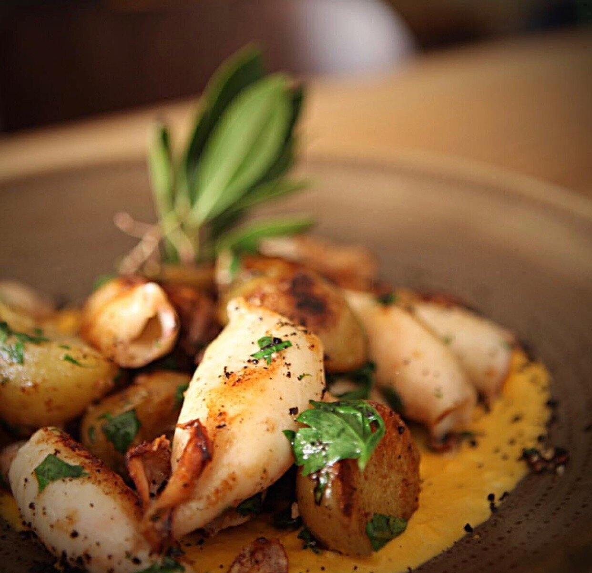
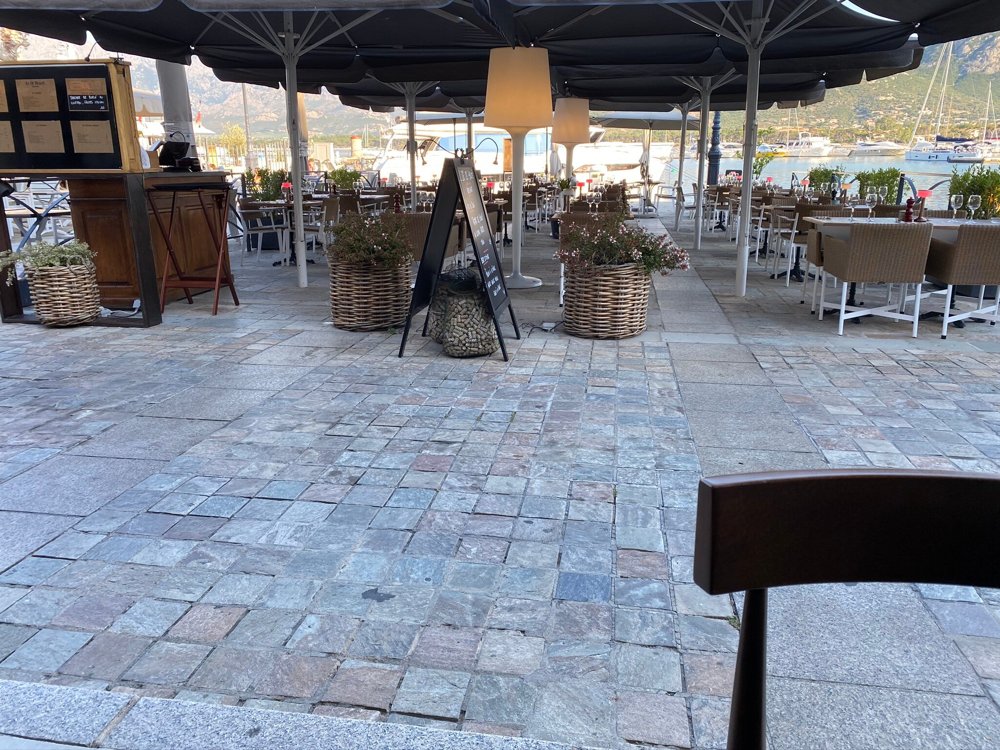
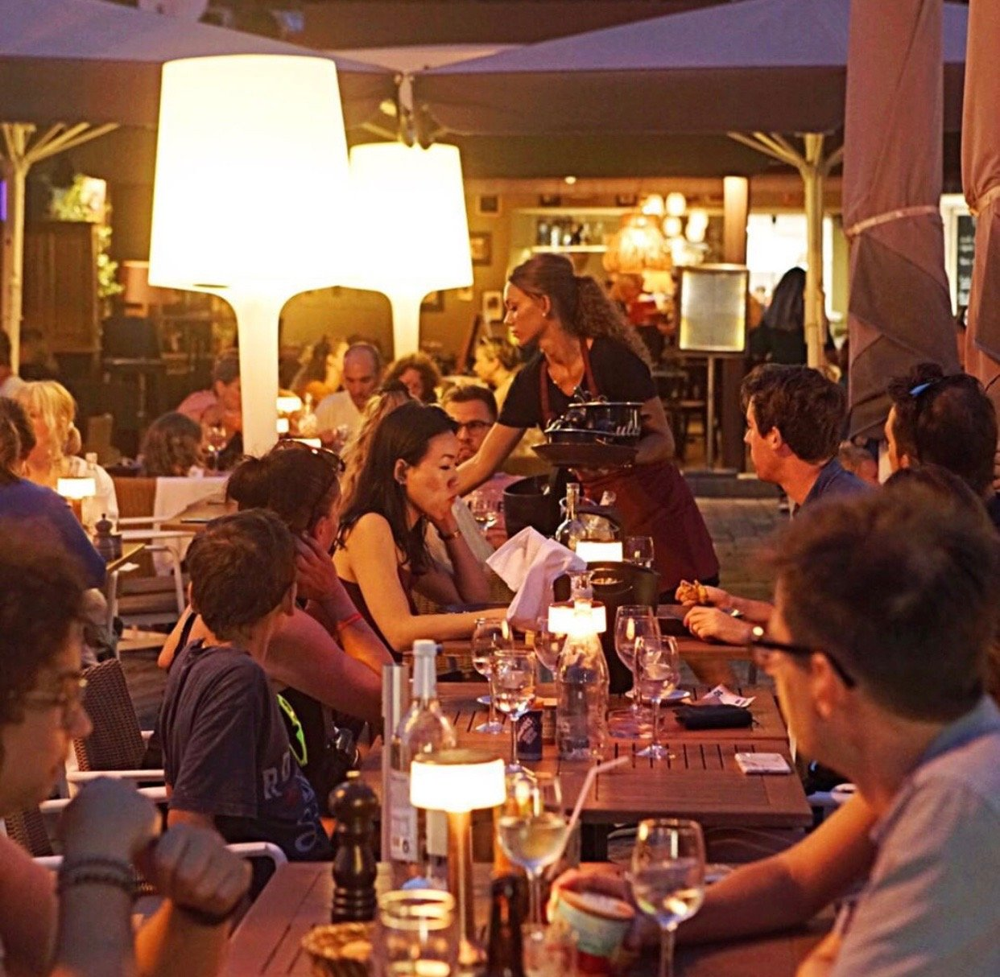
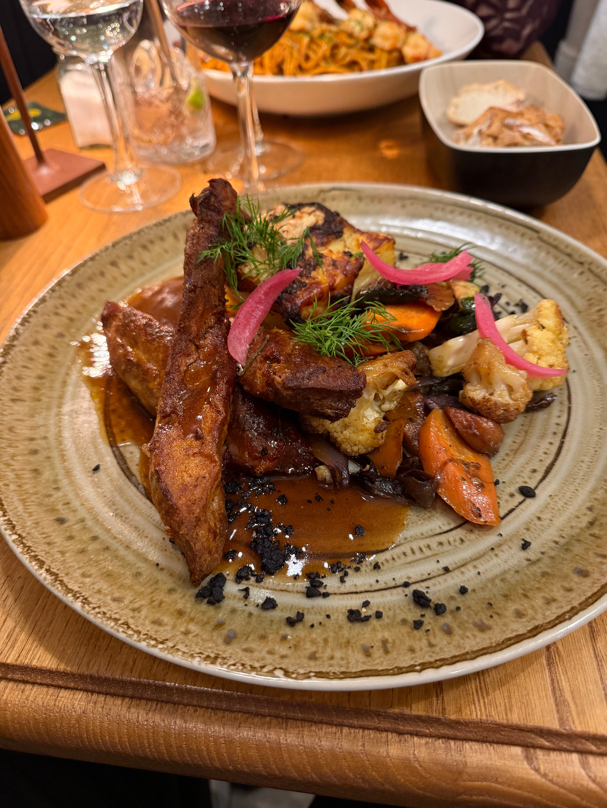
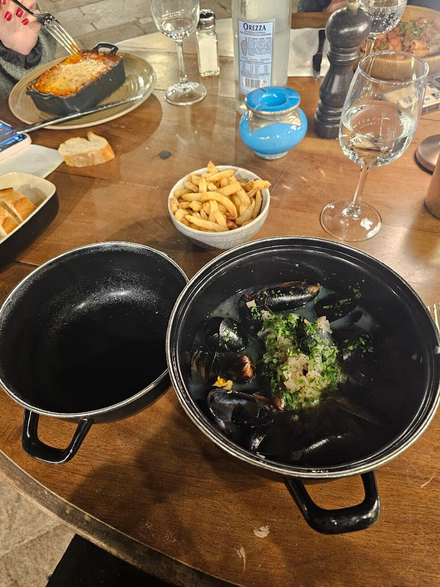
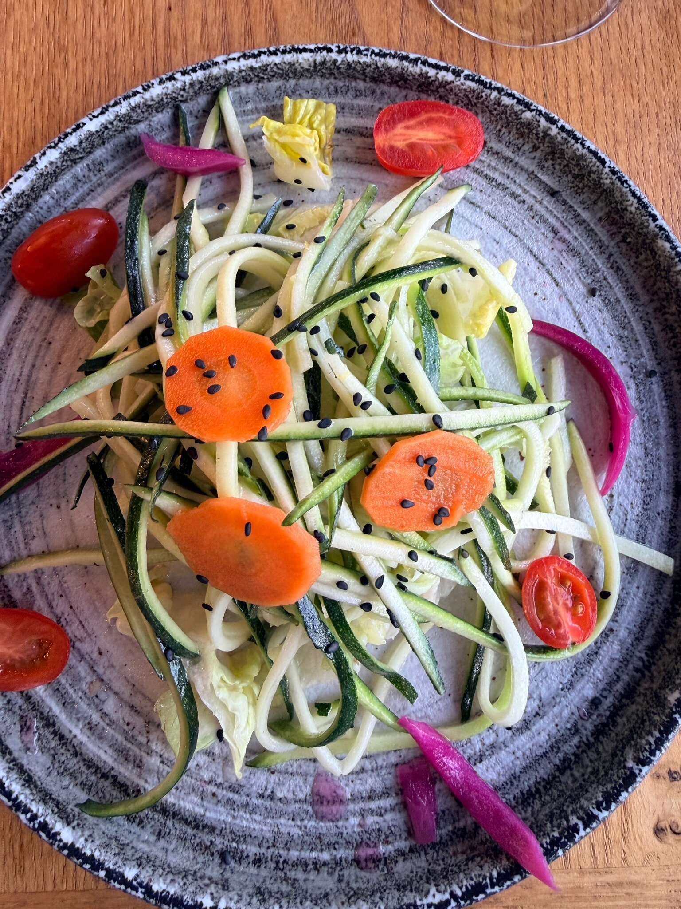
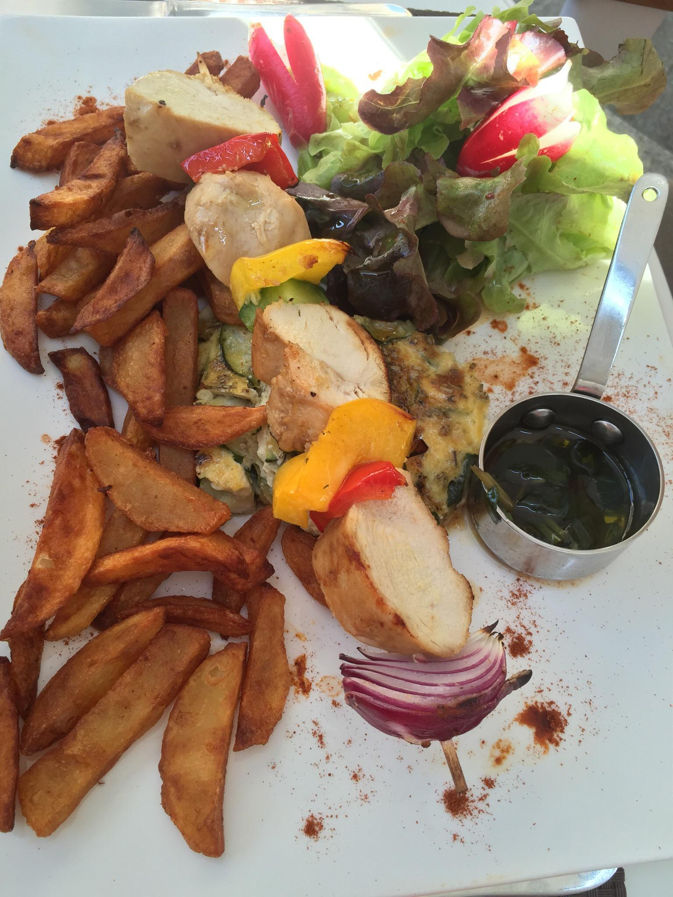

Calamars persillade
Frais du jour, ail, persil, huile chaude.


Bistrot face au port de plaisance, à deux pas de la Citadelle. Cuisine corse et française, deux services chaque jour, une terrasse qui change de visage entre midi et minuit.
Pavés tièdes, voiliers qui dansent, parasols ouverts. C'est l'heure du déjeuner sans hâte, des plats généreux et des verres bien frais, face à la Citadelle qui veille.
Des produits frais, des saveurs corses et françaises, le geste sûr d'une équipe qui connaît son port.

Frais du jour, ail, persil, huile chaude.

Cuisson lente, légumes rôtis, jus court.

Cocotte fumante, frites maison, eau Orezza.

Carottes, tomates cerises, graines, fraîcheur de saison.
Les bateaux rentrent, la terrasse se remplit, la Citadelle prend une teinte orange. Le service du soir commence.
"A superb setting. Excellent cuisine, fresh, generous. Calamars délicieux, daurade, rigatoni au canard."
"Lovely setting right on the harbour. Boar pâté, ragout de 3 viandes, fiandone. So tasty."
"Excellent restaurant, très qualitatif et professionnel. Rapport qualité-prix appréciable."
